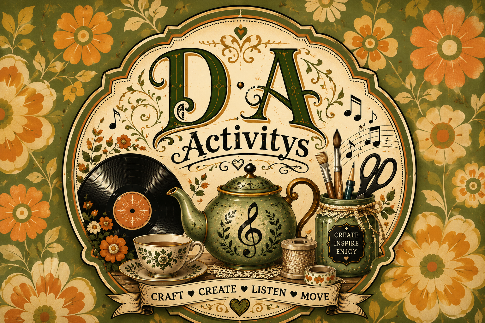
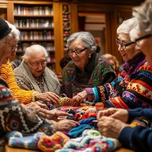

Morning Music Movement
Start the day gently with familiar melodies, light movement, breath work, and plenty of joy.

D A Activities
Movement, Music, Afternoon Tea & Crafts
A warm, vintage-inspired community space
At D A Activities, Deborah Austin brings joyful afternoons for older adults with music-led movement, cream tea gatherings, and handmade craft experiences.
Explore our sessions
Social enterprise with heart
D A Activities is dedicated to supporting wellbeing through gentle movement, music, and creative handmade crafts. Every activity is designed to be inclusive, uplifting, and beautifully nostalgic.
Gentle seated and standing exercises with familiar songs, helping members feel energised and connected.
Relaxed tea-time sessions with homemade treats, floral table settings, and friendly conversation.
Vintage-style crafts, paper florals, knitting, and keepsake projects that delight every maker.
What we offer
Start the day gently with familiar melodies, light movement, breath work, and plenty of joy.
Cozy tea parties with floral china, homemade snacks, and conversation circles.
Textured paper, flower motifs, and gentle handcrafts that celebrate creativity at every pace.
What our participants say
"The music movement sessions have brought so much joy into my life. I feel more energised and connected with wonderful people. Deborah's gentle approach makes everyone feel welcome and valued."
"I absolutely love the afternoon tea gatherings. The beautiful table settings and homemade treats remind me of lovely times past. It's become my favourite part of the week!"
"The craft sessions are wonderful! I've discovered I still have creativity in me. Making keepsakes with new friends has been truly special and uplifting."
"D A Activities has transformed my routine. The combination of gentle movement, music, and crafts gives me purpose and connection. Deborah is such a warm and caring facilitator."
"I've made the most wonderful new friends through these sessions. The atmosphere is always warm and inclusive. It's exactly what I needed to feel part of a caring community."
Connect with Deborah Austin and the D A Activities team to arrange your first session or learn more about our social enterprise.
Email: debaustin007@gmail.com
Phone: 07837 798022